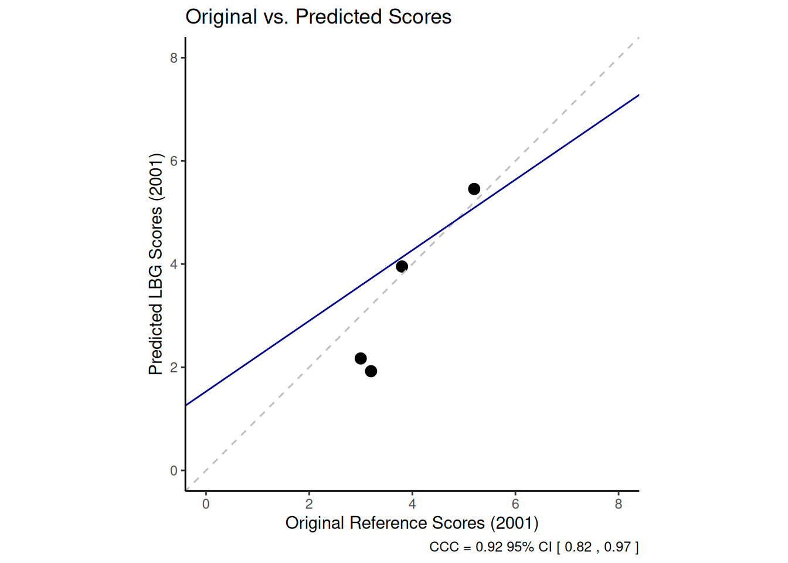
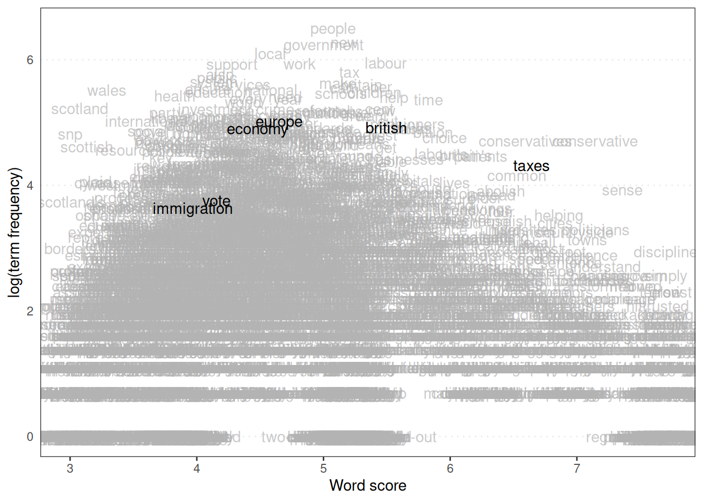
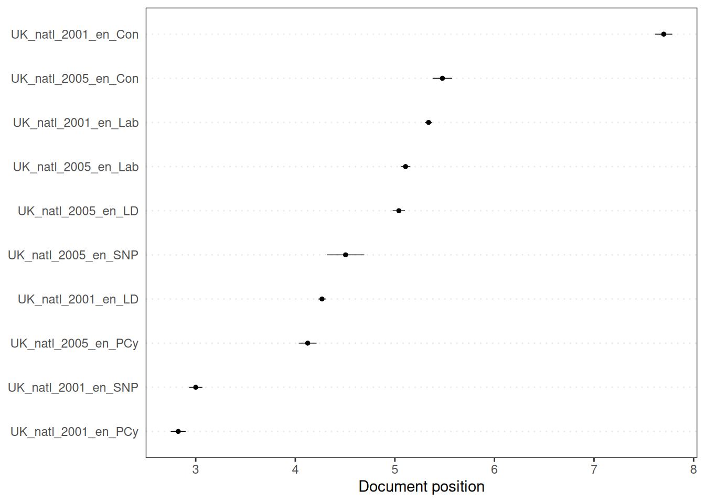
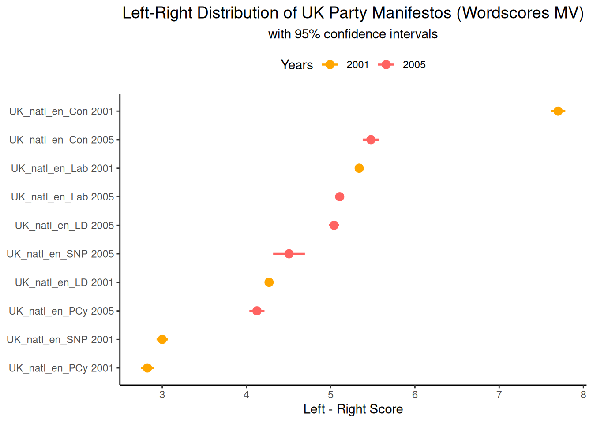

6.1 Wordscores
Wordscores is a supervised scaling method that requires a set of reference texts for which the position on the scale of interest is already known. These positions are then used to estimate scores for individual words, which are aggregated to estimate the position of new texts (for which the position is unknown) on the same scale. The basic idea is that words that frequently appear in texts with known extreme positions on a scale are likely to indicate that position. For instance, words that frequently appear in texts known to be on the far left of the scale might receive low scores, while words that frequently appear in texts on the far right might receive high scores. The score of a new text is calculated by taking the weighted average of the scores of the words it contains, where the weights are usually the word frequencies.
Here, we aim to position the 2005 manifestos of the five main UK political parties (Labour, Liberal Democrats, Conservatives, Scottish National Party and Plaid Cymru) on a general left-right scale. The 2001 manifestos of the same parties are used as reference texts. We will use external ratings, such as those from the 2002 Chapel Hill Expert Survey (Bakker et al., 2012) or other expert judgements, to determine their positions on the scale.
First, we load the necessary libraries and the corpus of UK party manifestos provided in quanteda.corpora. We then subset the corpus to include only the 2001 and 2005 manifestos of the selected parties. We then create a document feature matrix (DFM) following standard preprocessing steps.
library(quanteda)
library(quanteda.corpora)
library(dplyr) # For data manipulation
library(stringr) # For string manipulation
library(ggplot2) # For plotting
# Load the UK manifestos corpus
data(data_corpus_ukmanifestos)
corpus_manifestos <- corpus_subset(data_corpus_ukmanifestos, Year %in% c(2001, 2005))
corpus_manifestos <- corpus_subset(corpus_manifestos, Party %in% c("Lab", "LD", "Con",
"SNP", "PCy"))
# Tokenise the corpus with standard preprocessing
data_manifestos_tokens <- tokens(corpus_manifestos, what = "word", remove_punct = TRUE,
remove_symbols = TRUE, remove_numbers = TRUE, remove_url = TRUE, remove_separators = TRUE,
split_hyphens = FALSE, include_docvars = TRUE, padding = FALSE)
data_manifestos_tokens <- tokens_tolower(data_manifestos_tokens)
data_manifestos_tokens <- tokens_select(data_manifestos_tokens, stopwords("english"),
selection = "remove")
data_manifestos_dfm <- dfm(data_manifestos_tokens)
# Print the document names to verify the order
data_manifestos_dfm@Dimnames$docs## [1] "UK_natl_2001_en_Con" "UK_natl_2001_en_Lab" "UK_natl_2001_en_LD"
## [4] "UK_natl_2001_en_PCy" "UK_natl_2001_en_SNP" "UK_natl_2005_en_Con"
## [7] "UK_natl_2005_en_Lab" "UK_natl_2005_en_LD" "UK_natl_2005_en_PCy"
## [10] "UK_natl_2005_en_SNP"The order of the documents in the DFM is essential for assigning reference scores. We can check this by looking at the document names. Next, we set the known scores (from the 2002 Chapel Hill Expert Survey) for the reference texts (the 2001 manifestos). We set the score to ‘NA’ for the new texts (the 2005 manifestos). These scores should match the order of the documents in the DFM. Finally, we run the textmodel_wordscores() function, providing it with the DFM and the vector of reference scores:
library(quanteda.textmodels)
scores <- c(7.7, 5.2, 3.8, 3.2, 3, NA, NA, NA, NA, NA)
# Run the Wordscores model
ws <- textmodel_wordscores(data_manifestos_dfm, scores)
# Display the summary of the Wordscores model, including word scores
summary(ws)##
## Call:
## textmodel_wordscores.dfm(x = data_manifestos_dfm, y = scores)
##
## Reference Document Statistics:
## score total min max mean median
## UK_natl_2001_en_Con 7.7 7179 0 92 0.8646 0
## UK_natl_2001_en_Lab 5.2 16386 0 166 1.9735 0
## UK_natl_2001_en_LD 3.8 12338 0 101 1.4860 0
## UK_natl_2001_en_PCy 3.2 3508 0 72 0.4225 0
## UK_natl_2001_en_SNP 3.0 5692 0 108 0.6855 0
## UK_natl_2005_en_Con NA 4349 0 46 0.5238 0
## UK_natl_2005_en_Lab NA 13366 0 147 1.6098 0
## UK_natl_2005_en_LD NA 9263 0 109 1.1156 0
## UK_natl_2005_en_PCy NA 4203 0 148 0.5062 0
## UK_natl_2005_en_SNP NA 1508 0 49 0.1816 0
##
## Wordscores:
## (showing first 30 elements)
## time common sense conservative manifesto introduction
## 5.828 6.525 7.359 7.143 4.475 3.979
## lives raising family living safely earning
## 6.034 4.423 5.513 4.717 5.738 6.034
## staying healthy growing older knowing world
## 6.938 4.289 4.741 6.276 7.700 4.365
## leader stronger society town country civilised
## 4.520 4.904 4.338 7.499 4.397 4.272
## proud democracy conclusion present ambitious programme
## 6.064 5.255 6.938 3.589 4.468 4.230The summary() output shows the estimated score for each word based on its distribution across the reference texts. These are the “word scores.” A text’s score is a weighted average of these word scores. Wordscores also calculates a raw score for each text. However, these raw scores are often clustered around the mean. To make the virgin text scores comparable to the reference scale, a rescaling step is applied. predict() with a textmodel_wordscores object performs this rescaling. There are two standard rescaling methods:
- LBG (Laver–Benoit–Garry) (Laver et al., 2003): Rescales the raw scores linearly to match the range of the reference scores.
- MV (Martin–Vanberg) (Martin & Vanberg, 2008): Rescales the raw scores to match the median and variance of the reference scores. This method calculates standard errors and confidence intervals for the estimated text scores.
Here, we apply both rescaling methods using the predict() function. We also request standard errors and confidence intervals for the MV rescaling:
## Warning: 2187 features in newdata not used in prediction.## UK_natl_2001_en_Con UK_natl_2001_en_Lab UK_natl_2001_en_LD UK_natl_2001_en_PCy
## 8.773880 5.455744 3.952488 1.923355
## UK_natl_2001_en_SNP UK_natl_2005_en_Con UK_natl_2005_en_Lab UK_natl_2005_en_LD
## 2.170182 5.651194 5.130845 5.036429
## UK_natl_2005_en_PCy UK_natl_2005_en_SNP
## 3.750297 4.285161## Warning: 2187 features in newdata not used in prediction.## Warning in predict.textmodel_wordscores(ws, rescaling = "mv", se.fit = TRUE, :
## More than two reference scores found with MV rescaling; using only min, max
## values.## $fit
## fit lwr upr
## UK_natl_2001_en_Con 7.700000 7.614308 7.785692
## UK_natl_2001_en_Lab 5.338408 5.302650 5.374166
## UK_natl_2001_en_LD 4.268507 4.227170 4.309845
## UK_natl_2001_en_PCy 2.824328 2.749561 2.899095
## UK_natl_2001_en_SNP 3.000000 2.933107 3.066893
## UK_natl_2005_en_Con 5.477515 5.379667 5.575363
## UK_natl_2005_en_Lab 5.107171 5.058585 5.155756
## UK_natl_2005_en_LD 5.039972 4.977774 5.102171
## UK_natl_2005_en_PCy 4.124604 4.035171 4.214036
## UK_natl_2005_en_SNP 4.505278 4.317356 4.693200
##
## $se.fit
## UK_natl_2001_en_Con UK_natl_2001_en_Lab UK_natl_2001_en_LD UK_natl_2001_en_PCy
## 0.04372127 0.01824402 0.02109101 0.03814726
## UK_natl_2001_en_SNP UK_natl_2005_en_Con UK_natl_2005_en_Lab UK_natl_2005_en_LD
## 0.03412945 0.04992337 0.02478895 0.03173450
## UK_natl_2005_en_PCy UK_natl_2005_en_SNP
## 0.04562959 0.09588018The predict() function returns scaled scores for reference and virgin texts. The scores for the reference texts can be used to evaluate how well the Wordscores model recovers the original known positions. The warning “n features in data not used in prediction” indicates that some words in the virgin texts were not present in the reference texts (or vice versa) and, therefore, could not be used in the scoring process. This common problem highlights the importance of vocabulary overlap between reference and novel texts (and is one of the disadvantages of using Wordscores (Bruinsma & Gemenis, 2019)).
Now, we can compare the original reference scores with those predicted by Wordscores for the reference documents to assess the model’s performance in recovering the known scores. The Concordance Correlation Coefficient (CCC) developed by Lin (1989) is an appropriate metric for this, as it measures the agreement between two variables by assessing how far the data points deviate from the 45-degree line (which would indicate perfect agreement). We calculate the CCC using the LBG scores for the 2001 manifestos and their original reference scores. We use the CCC() function from the DescTools package:
##
## Caricamento pacchetto: 'DescTools'## Il seguente oggetto è mascherato da 'package:car':
##
## Recode# Create a data frame with original reference scores, and LBG predicted scores
# for the 2001 manifestos Select the first 5 rows corresponding to the 2001
# manifestos based on the dfm order
comparison_data <- data.frame(original_scores = scores[1:5], predicted_lbg = pred_lbg[1:5])
ccc_result <- CCC(comparison_data$original_scores, comparison_data$predicted_lbg,
ci = "z-transform", conf.level = 0.95, na.rm = TRUE)The CCC value indicates the level of agreement. A value closer to 1 indicates greater agreement. The confidence interval provides a range for the true CCC value. We can examine the level of agreement in more detail by plotting the original scores against the predicted scores for the reference texts. Including the 45-degree line (perfect concordance) and a linear regression line (reduced major axis) helps visualise the relationship and identify potential outliers.
library(ggplot2)
# Calculate the linear model (Reduced Major Axis) for visualisation
lm_line <- lm(comparison_data$original_scores ~ comparison_data$predicted_lbg)
ggplot(comparison_data, aes(x = original_scores, y = predicted_lbg)) +
geom_point(size = 3) + # Use slightly larger points
scale_x_continuous(name = "Original Reference Scores (2001)", limits = c(0,8)) +
scale_y_continuous(name = "Predicted LBG Scores (2001)", limits = c(0,8)) +
ggtitle("Original vs. Predicted Scores") +
coord_equal(ratio = 1) + # Ensure equal scaling for x and y axes
geom_abline(intercept = 0, slope = 1, linetype = "dashed", color = "grey") + # 45-degree line
geom_abline(intercept = coef(lm_line)[1], slope = coef(lm_line)[2], linetype = "solid", color = "darkblue") + # Linear regression line
theme_classic() +
labs(caption = paste("CCC =", round(ccc_result$rho.c[1], 2),
"95% CI [", round(ccc_result$rho.c[2], 2), ",",
round(ccc_result$rho.c[3], 2), "]")) # Add CCC to caption
This graph enables us to inspect the level of agreement visually. Points close to the dashed 45-degree line suggest accurate predictions. Deviations from this line show areas where the model struggles to reproduce the original values. Identifying points far from the line (outliers) can help us to diagnose problems, such as a particular reference text whose language does not align well with its assigned score compared to the other texts.
As well as positioning the texts, we can look at the word scores themselves. Plotting word scores can show which words are most strongly associated with different positions on the scale. The textplot_scale1d() function from quanteda.textplots is useful. We specify margin = "features" to plot the word scores and can highlight specific words of interest.
library(quanteda.textplots)
# Plot the distribution of word scores
textplot_scale1d(ws, margin = "features", highlighted = c("british", "vote", "europe",
"taxes", "economy", "immigration") # Highlight relevant words on the plot
)
The position of words on the scale indicates their estimated ideological leaning based on the reference texts. Words like ‘taxes’ or ‘economy’ might be expected to fall towards one end (e.g. left). In contrast, words related to national identity or immigration might be closer to the other (e.g. right), depending on the corpus and the reference scores.
Finally, we can examine the confidence intervals around the estimated text scores, which is particularly important for the virgin texts, as it measures the uncertainty in their estimated positions. The textplot_scale1d() function can also plot document scores with confidence intervals when margin = "documents" is specified, but this requires the standard errors to be available, which is the case for the MV rescaling method (pred_mv):

The length of the error bars in this graph indicates the width of the confidence interval. Longer error bars indicate greater uncertainty in the estimated position of the document in question. This uncertainty may be due to various factors, such as the number of dictionary words in the document, variability in the scores of these words and the quantity and quality of the reference texts. We can manually create this document scaling plot using ggplot2 and the results from pred_mv. This requires manipulating the data to extract the scores and confidence intervals and document information into a data frame, for which we can use the dplyr package:
library(dplyr)
library(stringr)
library(tibble)
# Extract predicted fit and standard error
scores_fit <- as.data.frame(pred_mv$fit) %>%
rename(fit = 1) # Rename the column to 'fit'
scores_se <- as.data.frame(pred_mv$se.fit) %>%
rename(se = 1) # Rename the column to 'se'
# Combine fit and SE data frames and add document metadata
data_textplot <- scores_fit %>%
bind_cols(scores_se) %>% # Combine the 'fit' and 'se' data frames side by side
rownames_to_column("doc_id") %>% # Convert the row names (which are the document IDs) into a new column named 'doc_id'
mutate(
lwr = fit - 1.96 * se,
# Calculate the lower bound of the 95% confidence interval (assuming normal distribution)
upr = fit + 1.96 * se,
# Calculate the upper bound of the 95% confidence interval
year = factor(str_extract(doc_id, "\\d{4}")),
# Extract the year (four digits) from the doc_id and convert to a factor
party = str_replace(doc_id, "\\d{4}_", ""),
# Remove the year and underscore from the doc_id to get the party name
label = factor(paste(party, year), levels = paste(party, year)[order(fit)]) # Create a combined label of party and year, ordered by the 'fit' score for plotting
) %>%
select(doc_id, fit, lwr, upr, se, year, party, label) # Select and reorder the columns
head(data_textplot)## doc_id fit lwr upr se year party
## 1 UK_natl_2001_en_Con 7.700000 7.614306 7.785694 0.04372127 2001 UK_natl_en_Con
## 2 UK_natl_2001_en_Lab 5.338408 5.302650 5.374166 0.01824402 2001 UK_natl_en_Lab
## 3 UK_natl_2001_en_LD 4.268507 4.227169 4.309846 0.02109101 2001 UK_natl_en_LD
## 4 UK_natl_2001_en_PCy 2.824328 2.749560 2.899097 0.03814726 2001 UK_natl_en_PCy
## 5 UK_natl_2001_en_SNP 3.000000 2.933106 3.066894 0.03412945 2001 UK_natl_en_SNP
## 6 UK_natl_2005_en_Con 5.477515 5.379665 5.575364 0.04992337 2005 UK_natl_en_Con
## label
## 1 UK_natl_en_Con 2001
## 2 UK_natl_en_Lab 2001
## 3 UK_natl_en_LD 2001
## 4 UK_natl_en_PCy 2001
## 5 UK_natl_en_SNP 2001
## 6 UK_natl_en_Con 2005Now that we have the data in a convenient format, we can plot the estimated document positions with their confidence intervals using ggplot2. Ordering the documents by their estimated score on the y-axis is often helpful for visualisation.
library(ggplot2)
ggplot(data_textplot, aes(x = fit, y = label, colour = year)) +
geom_point(size = 3) +
scale_x_continuous(name = "Left - Right Score") +
geom_errorbarh(aes(xmax = upr, xmin = lwr),
height = 0,
linewidth = 0.8) +
theme_classic() +
scale_colour_manual(
values = c("2001" = "#ffa600", "2005" = "#ff6361"),
# Define custom colours for the years 2001 and 2005
name = "Years"
) + # Set the title for the colour legend
ggtitle("Left-Right Distribution of UK Party Manifestos (Wordscores MV)",
subtitle = "with 95% confidence intervals") +
theme(
plot.title = element_text(size = 14, hjust = 0.5),
plot.subtitle = element_text(hjust = 0.5),
legend.position = "top",
axis.title.y = element_blank()
)
This graph shows the estimated left-right position of each manifesto in 2001 and 2005, as well as the uncertainty of the 2005 estimates. It shows the parties’ relative positions and how their estimated values may have changed between the two election years. The width of the confidence intervals indicates which estimates are less specific, potentially because of limited text length or vocabulary overlap with the reference texts.